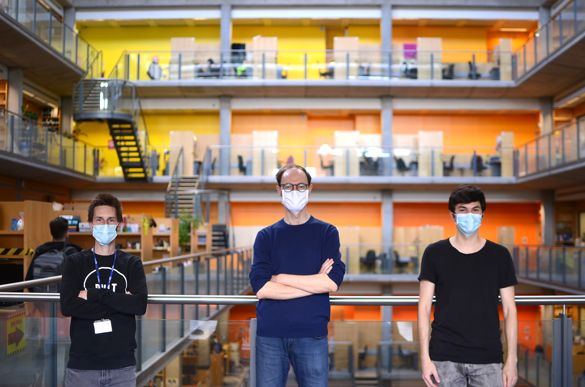
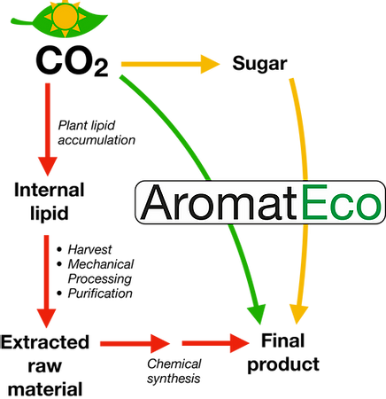

AromatEco is an early-stage company operating out of London. They produce sustainable, high-value flavours and fragrances using genetically engineered organisms. In this edited conversation, I spent time with Dr Patrik Jones, Jonathon Muller and Ben Ng who are the team behind this climate-tech company.

These guys make up an impressive outfit. Patrik is an Academic with more than 20 years of R&D experience in microbial metabolic engineering. He is also the co-founder of Arakoon Wines and BIO-F Solutions. Jonathan is a PhD student in the life sciences who is leading the R&D and the development of new products as CTO of AromatEco. Ben completed his MEng. in Biomedical Engineering at Imperial and has co-founded two companies. He is leading Market and Business Development of AromatEco as CEO.
What was the motivation behind creating AromatEco?
There were two main reasons. Firstly, it was an opportunity to take things further and create a company that would be very effective outside of the academic environment. Secondly, it was clear that the the chemical industry has a sustainability problem which needs solving. This can be addressed with our technology. Instead of being a carbon emitting industry the chemicals sector can become a carbon-absorbing industry which is really exciting.
"Instead of being a carbon emitting industry the chemicals sector can become a carbon-absorbing industry"
So how are you going about that?
We sustainably produce chemicals from carbon dioxide and other sources using microbes. We take these microbes and use a photosynthetic process to create chemicals that you would use in everyday products in a much more renewable way.

What are some of the technical challenges that you've encountered on this mission?
One of the big challenges is that our organisms grow quite slowly. It can take about a month or so to generate new strains and a few more weeks to culture and collect data. So, to get around that, we've been using E. coli like a 'biological prototype' because we can introduce the same changes to these and get results within a week. This means we can then iterate a few rounds within E.coli, optimize the pathway and then transfer it to our bacteria. This has really sped up the process.
What about business challenges?
It's mainly to do with the chemical industry not being very transparent. This is quite unlike other tech like SaaS where you can get customer research done pretty fast. A roadblock was actually finding out which products to target for production. There is plenty of secrecy around what products are being produced already.
Could you give any tips or insights which might be helpful for a fellow early-stage startup founder in climate-tech?
Thinking about how you communicate your science is key. Sometimes investors will struggle to understand the highly specialized terminology you use. An example is how we have started to use the term 'biological prototype' for the E. coli strain. This alone has helped bring people on board.
In addition, you need perseverance and drive. That's how you get traction, especially in a traditional industry where it really becomes a numbers game. You need to keep talking to people and sooner or later, people will start connecting you with the people you need to connect with. Then you can find that one champion who will help you in the industry. You need to be out there active and networking. The more we do that collectively, the more we are likely to strike the right people and the right opportunities. That's what we're actually trying to do right now.
Also, make sure you network with the people relevant to you. Initially we did networking with the wrong people and they didn't seem to understand our product. Once you start approaching environmental angels and people within the space doors start opening.
"Make sure you network with the people relevant to you"
So what's next for AromatEco?
The next thing is our scale-up. We're actually working on setting up a bioreactor now. In addition, we need to find that industry champion and look for other chemicals that the industry is after.

Interviewer: Peter Green